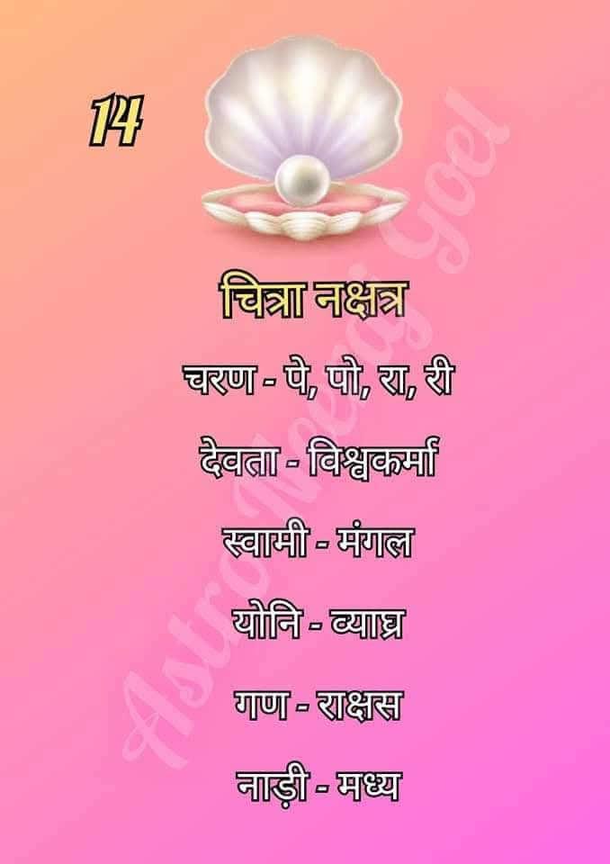

चित्रा नक्षत्र (Chitra Nakshatra)
चित्रा नक्षत्र आकाश मंडल का चौदहवां नक्षत्र है। इसे 'तवष्टा' या 'विश्वकर्मा' का नक्षत्र माना जाता है, जो कला, वास्तुकला और सृजन का प्रतीक है।

सामान्य स्वभाव:
चित्रा नक्षत्र में जन्मे जातक अत्यंत प्रतिभाशाली, आकर्षक और सृजनात्मक होते हैं। ये लोग चमक-दमक के शौकीन होते हैं और हर कार्य को पूर्णता (perfection) के साथ करना पसंद करते हैं।
चित्रा नक्षत्र की मुख्य विशेषताएँ
- सृजनात्मक प्रतिभा: इनमें नई चीजें बनाने और सजाने की अद्भुत क्षमता होती है।
- आकर्षक व्यक्तित्व: इनका व्यक्तित्व प्रभावशाली होता है, जिससे ये लोगों का ध्यान जल्दी आकर्षित करते हैं।
- कुशलता: ये बारीक से बारीक काम को भी बहुत कुशलता और सुंदरता से पूरा करते हैं।
- महत्वाकांक्षी: अपने लक्ष्यों के प्रति ये बहुत जागरूक और उत्साही होते हैं।
- ऊर्जावान: ये हमेशा सक्रिय रहते हैं और नया सीखने के लिए तत्पर रहते हैं।
शिक्षा एवं करियर
चित्रा नक्षत्र के जातक अपनी कलात्मकता और निर्माण कौशल के कारण निम्नलिखित क्षेत्रों में अधिक सफल होते हैं:
- वास्तुकला एवं इंटीरियर डिजाइन (Architecture & Interior Design)
- ग्राफिक डिजाइनिंग एवं कला (Graphics & Fine Arts)
- इंजीनियरिंग एवं तकनीकी कार्य (Engineering & Technology)
- फैशन डिजाइनिंग एवं सौंदर्य कला (Fashion & Beauty Industry)
- फिल्म निर्माण एवं फोटोग्राफी (Film Production & Photography)